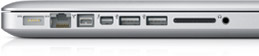

MacBook Pro (13 polegadas, Início de 2011)
Core i5 2.3GHz, 16GB RAM, SSD 256GB
R$ 4200 - Lucas Menge (l.m.menge@gmail.com)
{kind=link}
Estou vendendo meu MacBook Pro 13" com Processoador Intel Core i5 2.3GHz, 16GB de RAM e SSD de 256GB porque irei adquirir um novo.
Configurações
| MacBook Pro de 2,3GHz | |
| Estrutura | Unibody de alumínio de precisão |
| Processador | Processador Intel Core i5 dual core de 2,3GHz |
| Cache L3 | 3MB compartilhado |
| Memória | 16GB de memória SDRAM DDR3 de 1333MHz (dois SO-DIMMs de 8GB) |
| Disco rígido6 | SSD Crucial M4 256GB |
| Slot para drive óptico | SuperDrive 8x (DVD±R DL/DVD±RW/CD-RW) |
| Processadores gráficos | Intel HD Graphics 3000 com 512MB de SDRAM DDR3 compartilhada com a memória principal5 |
| Vídeo | Câmera FaceTime HD; porta Thunderbolt com suporte a DVI, VGA e DVI Dual Link e HDMI (necessita de adaptadores, vendidos separadamente) |
| Tela | Tela widescreen brilhante de 13,3 polegadas (diagonal), retroiluminada por LEDs, resolução de 1280x800 |
| Expansão | Uma porta Thunderbolt (até 10Gbps), uma porta FireWire 800 (até 800Mbps), duas portas USB 2.0 (até 480Mbps) e slot para cartão SDXC |
| Áudio | Alto-falantes estéreo com subwoofers, microfone omnidirecional, entrada de fone de ouvido/line in combinada (suporte saída óptica) |
| Rede | Ethernet (Gigabit) 10/100/1000BASE-T |
| Mobilidade | Wi-Fi (de acordo com a especificação IEEE 802.11n)2; tecnologia sem-fio Bluetooth 2.1 + EDR (Enhanced Data Rate) |
| Acessórios (hardware) | Carregador MagSafe de 60W, adaptador AC de parede e fio |
| Apple e o meio ambiente |
Saiba mais sobre a dedicação da Apple para reduzir o impacto ambiental dos seus produtos e processos. O documento Apple Product Environmental Specification detalha os atributos ambientais dos nossos produtos. |
| Reciclagem | A Apple adota uma visão holística com relação ao gerenciamento de materiais e redução do desperdício. Saiba mais sobre como reciclar o seu Mac. |
Tamanho e peso
- Altura: 2,41cm (0,95 polegada)
- Largura: 32,5cm (12,78 polegadas)
- Espessura: 22,7cm (8,94 polegadas)
- Peso: 2,04kg (4,5 libras)1
Conexões e expansões

- Porta de alimentação MagSafe
- Porta Gigabit Ethernet
- Porta FireWire 800 (até 800 Mbps)
- Duas portas USB 2.0 (até 480 Mbps)
- Porta Thunderbolt (até 10 Gbps)
- Entrada/saída de áudio
- Slot para cartão SDXC
- Slot para trava de segurança Kensington
Conectividade
- Rede sem-fio Wi-Fi2 (de acordo com a especificação IEEE 802.11n); compatível com IEEE 802.11a/b/g
- Tecnologia sem-fio Bluetooth 2.1 + EDR (Enhanced Data Rate)
- Ethernet Gigabit 10/100/1000BASE-T (conector RJ-45)
Áudio
- Alto-falantes estéreo com subwoofers
- Microfone omnidirecional
- Fone de ouvido/line in combinado (suporta saída digital)
- Compatível com fone de ouvido com microfone da Apple para iPhone
Tela
- Tela brilhante widescreen de 13,3 polegadas (diagonal) retroiluminada por LED e suporte a milhões de cores
- Resoluções suportadas: 1280x800 (nativa), 1152x720, 1024x640 e 800x500 pixels com taxa de aspecto de 16:10; 1024x768, 800x600 e 640x480 pixels com taxa de aspecto de 4:3; 1024x768, 800x600 e 640x480 pixels com taxa de aspecto expandida de 4:3; 720x480 pixels com taxa de aspecto de 3:2; 720x480 pixels com taxa de aspecto expandida de 3:2
Suporte a gráficos e vídeo
- Intel HD Graphics 3000 com 512MB de SDRAM DDR3 compartilhada com a memória principal5
- Dois monitores e espelhamento de vídeo: Suporta simultaneamente a resolução nativa na tela integrada e até 2560 por 1600 pixels na tela externa, ambos com milhões de cores
- Câmera FaceTime HD
- Porta Thunderbolt
Saída de vídeo digital Thunderbolt
- Saída Mini DisplayPort nativa
- Saída DVI usando adaptador Mini DisplayPort para DVI (opcional)
- Saída VGA usando adaptador Mini DisplayPort para VGA Adapter (opcional)
- Saída DVI Dual Link usando adaptador Mini DisplayPort para DVI Dual Link suporta Apple Cinema HD Display de 30 polegadas (opcional)
- Saída de vídeo e áudio HDMI usando um adaptador Mini DisplayPort para HDMI de terceiros
Entrada
- Teclado completo integrado com retroiluminação por LED e 78 (U.S.) ou 79 (ISO) teclas, com 12 teclas de função e 4 teclas de direção (formato "T" invertido)
- Trackpad Multi-Touch para controle preciso do cursor. Funções suportadas: rolamento inercial, esticar, girar, deslizar, deslizar com três dedos, com quatro dedos, um toque, dois toques e arrastar
Processador e memória
- Processador Intel Core i5 dual core de 2,3GHz com 3MB de cache L3 compartilhado
- 16GB de memória DDR3 de 1333MHz (dois SO-DIMMs de 8GB); dois slots SO-DIMM com suporte a até 16GB
Armazenamento
- SSD Crucial M4 256GB6
- Slot para SuperDrive 8x (DVD±R DL/DVD±RW/CD-RW)
- Velocidade máxima de gravação: DVD-R 8x, DVD+R; DVD-R DL 4x (camada dupla), DVD+R DL (camada dupla), DVD-RW, DVD+RW; CD-R 24x; CD-RW 10x
- Velocidade máxima de leitura: 8x DVD-R, DVD+R, DVD-ROM; 6x DVD-ROM (DVD-9 de dupla camada), DVD-R DL (dupla camada), DVD+R DL (dupla camada), DVD-RW, DVD+RW; 24x CD
Bateria e energia7
- Até 4.5h sem-fio na web
- Bateria interna de polímero de lítio com consumo de 63,5 watts/hora
- Carregador MagSafe de 60W com sistema de gerenciamento de cabo
- Porta de alimentação MagSafe
Requisitos elétricos e operacionais
- Voltagem: de 100V a 240V AC
- Frequência: de 50Hz a 60Hz
- Temperatura operacional: 10° a 35°C
(50° a 95°F) - temperatura de armazenamento: -24° a 45°C (-13° a 113°F)
- Umidade relativa: 0% a 90%, sem condensação
- Máxima altitude operacional: 10.000 pés
- Máxima altitude de armazenamento: 15.000 pés
- Máxima altitude para remessa: 35.000 pés
Conteúdo da caixa
- MacBook Pro
- Pano para limpeza da tela
- Carregador MagSafe de 60W, conector AC para parede e fio
- DVDs dos softwares
- Documentação impressa e eletrônica
Softwares
- OS X v10.10 Yosemite (com iTunes, Time Machine, Quick Look, Spaces, Spotlight, Dashboard, Mail, iChat, Safari, Agenda, QuickTime, iCal, DVD Player, Photo Booth, Front Row, Xcode Developer Tools)
- iLife (com iPhoto, iMovie, iDVD, iWeb, GarageBand)
Relatório de conformidade ambiental
O MacBook Pro foi projetado com os seguintes recursos de forma a reduzir o impacto ambiental:
- Estrutura de alumínio e vidro altamente recicláveis
- Tela retroiluminada por LED, sem mercúrio
- Tela de vidro sem arsênico
- Sem BFR
- Sem PVC3
- Embalagens menores
- Atende aos critérios da ENERGY STAR Versão 5.0
- Selo EPEAT Gold4
Desempenho Acústico
EMISSÕES DE RUÍDOS DECLARADAS em conformidade com ISO 9296
| Nível de potência sonora LWAd (B) 1 B = 10 dB |
Nível de pressão sonora Posição do operador LpAm (dB) |
|||
| 2,3 GHz | 2,7 GHz | 2,3 GHz | 2,7 GHz | |
| Ocioso | 2,7 | 2,7 | 17 | 16 |
| Acesso da unidade de disco rígido | 2,7 | 2,7 | 16 | 14 |
| Acesso da unidade de CD | 3,4 | - | 26 | - |
- LWAd é o nível estatístico de potência sonora ponderado A de limite superior (arredondado para o 0,1B mais próximo).
- LpAm é o nível médio de pressão sonora ponderado A medido na posição do operador (arredondado para o dB mais próximo).
- 1 B (bel) = 10 dB (decibel).
Opcionais Suportados, porém não inclusos
Time Capsule
Time Capsule é uma estação base AirPort Extreme completa com um disco rígido interno. Com ela você faz backups e compõe uma rede Wi-Fi com um único dispositivo.
- Disco rígido de 1TB ou 2TB de excelente qualidade
- Wi-Fi certificada para 802.11n 2.0
- Porta USB para conexão com uma impressora USB ou disco rígido USB externo
Configuração personalizada
- Disco rígido de 500GB (5400 rpm)
- Disco rígido de 750GB (5400 rpm)
- Drive de estado sólido de 128GB, 256GB ou 512GB
- Até 16GB de SDRAM DDR3, 1333MHz
- Apple Remote
- Adaptador Mini DisplayPort para DVI da Apple
- Adaptador Mini DisplayPort para DVI Dual Link da Apple
- Adaptador Mini DisplayPort para VGA da Apple
- Adaptador MagSafe Airline
- AppleCare Protection Plan
- Aperture
- Final Cut Express
- Logic Express
- iWork
Acessórios
- Apple LED Cinema Display
- Base AirPort Extreme
- Base AirPort Express
- Teclado sem-fio da Apple
- Magic Mouse
- Teclado Apple com teclado numérico
- Mouse da Apple
- O peso real varia de acordo com a configuração e processo de fabricação.
- O acesso sem-fio à internet exige uma base ou outro ponto de acesso sem-fio e acesso à internet (sujeito à cobrança). Alguns provedores de acesso não são compatíveis com AirPort.
- Cabo de força AC sem PVC disponível nos Estados Unidos, Canadá, México, Colômbia, El Salvador, Guatemala, Panamá, Peru, Porto Rico, Ilhas Virgens Americanas e Venezuela.
- O MacBook Pro obteve o selo Gold da EPEAT nos Estados Unidos, Canadá, França, Alemanha e Reino Unido.
- A memória disponível para o Mac OS X varia de acordo com as necessidades gráficas. O mínimo é 384MB.
- 1GB= 1 bilhão de bytes; a capacidade real é menor após a formatação.
- Testes de navegação na web sem-fio conduzidos por Lucas Menge de forma informal. Dependendo do conteúdo dos sites, a duração da bateria pode variar.